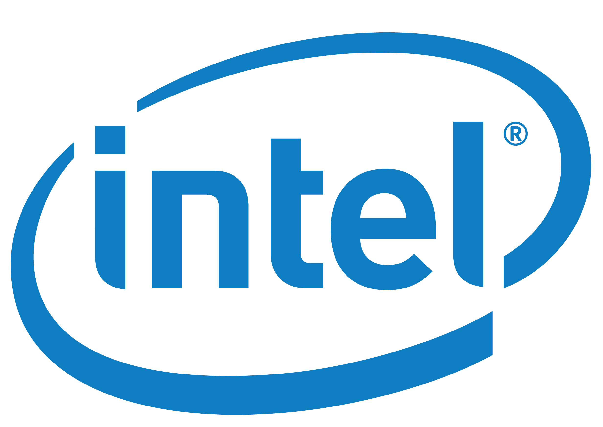
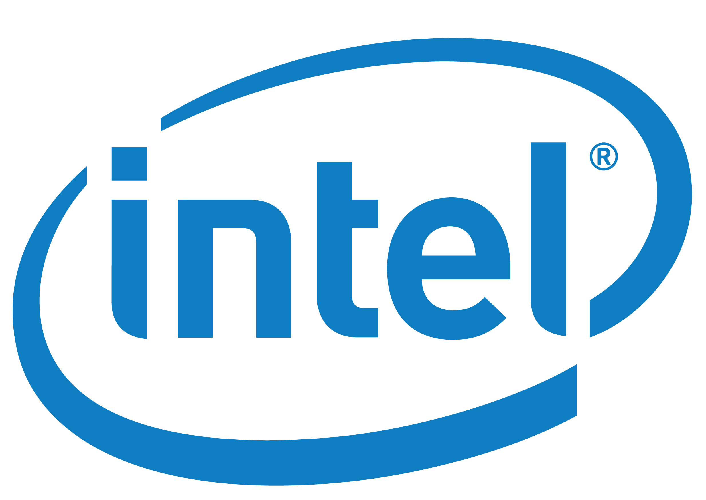
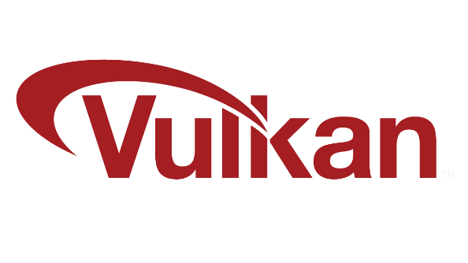

Algemeen
Dit zijn algemene tips om je PC (Personal Computer) sneller en opgeruimder te maken.
Performance boost
Verwijder apps die je niet meer gebruikt, sluit apps af die in de achtergrond runnen, ruim je zooi op (files, downloads etc.), leer een beetje organiseren met mappies enzo, verwijder desktop icons (dit is een mening, maar ik krijg er autisme van), zet startup apps uit (dit kan in windows settings of via task manager (ctrl + shift + esc)). Gebruik alsjeblieft geen CCleaner, dit is "spyware" (zie LTT zijn video) en slecht voor privacy. Windows heeft ook een ingebouwde opschoner, genaamt "Disk Clean-up". Deze raad ik aan voor normaal gebruik. BleachBit is ook niet zo goede optie, omdat dit blijkbaar slecht is voor je disk en het brengt veel problemen met zich mee.
Veel mensen noemen dit ook wel "bloat" en het verminderen kan een enorme performance boost geven. Ook kan je je windows instellingen veranderen voor betere snelheid. Zie ook "Terminal" voor een script om Windows te debloaten.
Ik zie veel mensen ook met meerdere anti-4russen en VPN's. Anti-4russen zijn compleet overbodig en verneuken je PC (het maakt je PC langzaam*). Windows heeft er zelfs eentje ingebouwd. 1 VPN is prima, maar meerdere kan ook tot problemen lijden.
Ook meedere games tegelijk open hebben is een erg slecht plan. 2 kan opzich nog, maar zelfs dat is sterk af te raden. Sluit de ene game af voordat je de andere gaat spelen.
In games zelfs kan je ook de settings veranderen voor betere performance. V-Sync "capped" je FPS tot het aantal hoeveelheid herts je monitor heeft en vermindert screen tearing. Ik heb dit persoonlijk bijna altijd uit. Fullscreen mode geeft je meer FPS, maar met borderless kan je alt + tab doen. Ik vind borderless prettiger. Ook kan je de graphics een heel stuk lager zetten voor betere FPS.
Daarbij kan je ook gebruik maken van MSI Afterburner (closed source). MSI Afterburner is een programma dat je een overlay geeft voor games, zodat je alles wat er gebeurt op de pc kunt zien en aanpassen. Je kan er ook mee "overclocken", maar is niet aan te raden want het kan je PC/laptop neuken. Je kan FPS, tijd, GPU en CPU % zien en nog veel meer. Verwijder als je problemen krijgt.
Up-to-date blijven
Zorg er ook voor dat je meuk up-to-date blijft! Dit kan via Windows updates; Microsoft Store (ja, dit staat appart van Windows updates); Winget, Chocolatey en Scoop (winget upgrade --all, choco upgrade all en scoop upgrade all) en tot slot heb je ook nog je driver updates van bijvoorbeeld je graphics card (GPU). Op AMD kan dit met het Radeon Software, Nvidia doet dit met hun eigen meuk en Intel gebruikt SupportAssist en Intel Driver & Support Assistant. Supportassist is alleen voor Dell laptops, zoals die van mij. Intel Driver & Support Assistant moet ook aanstaan bij startup, anders kan er iets mis gaan.

 

Graphics APIs
In emulators als Dolphin, Retroarch, Citra, Ryujinx etc. zal ik aanraden om Vulkan te gebruiken (Citra met Vulkan is nog niet uit). Vulkan is een manier om je graphics te renderen. Je hebt ook OpenGL, DirectX (11 en 12 zijn de nieuwste) etc. Vulkan is meestal de snelste en is cross platform (dit houdt in dat het op meerdere systemen te gebruiken is, zoals Linux, Android en Windows (zie "OS's")), maar DirectX is zeer zeker geen slechte keus. DirectX is alleen voor Windows. AMD heeft geen support meer voor OpenGL (nou ja, is er een aantal jaren geleden mee gestopt) en is heel langzaam. Minecraft bijvoorbeeld gebruikt wel nogsteeds OpenGL, daarom is een Nvidia graphics card vaak ook een stuk beter voor Minecraft. Voor AMD kan je op Linux spelen. Linux heeft iets genaamt Mesa en dit heeft wel support voor OpenGL. Dus Minecraft is ook een stuk sneller op Linux!🥰
